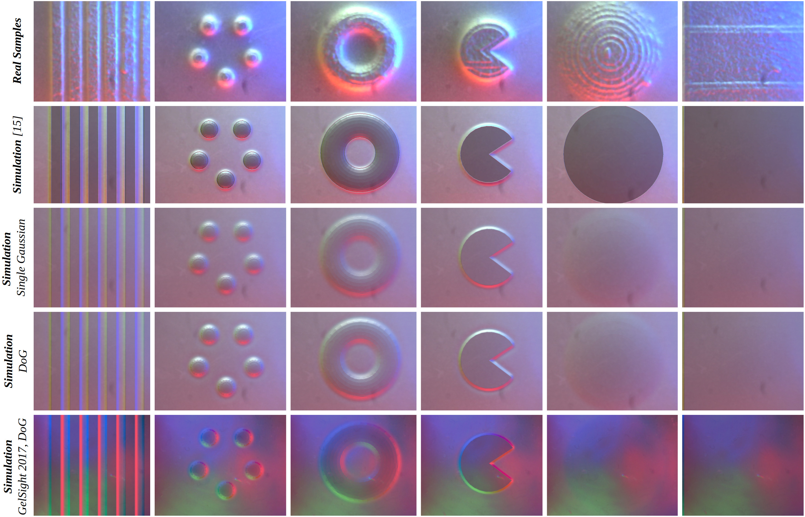
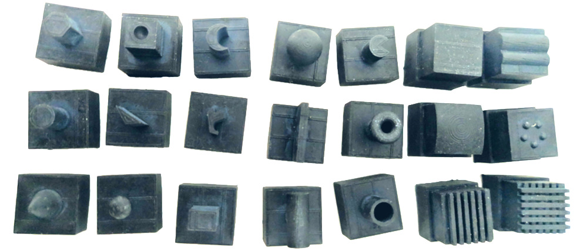

Most current works in Sim2Real learning for robotic manipulation tasks leverage camera vision that may be significantly occluded by robot hands during the manipulation. Tactile sensing offers complementary information to vision and can compensate for the information loss caused by the occlusion. However, the use of tactile sensing is restricted in the Sim2Real research due to no simulated tactile sensors being available. To mitigate the gap, we introduce a novel approach for simulating a GelSight tactile sensor in the commonly used Gazebo simulator. Similar to the real GelSight sensor, the simulated sensor can produce high-resolution images by an optical sensor from the interaction between the touched object and an opaque soft membrane. It can indirectly sense forces, geometry, texture and other properties of the object and enables Sim2Real learning with tactile sensing. Preliminary experimental results have shown that the simulated sensor could generate realistic outputs similar to the ones captured by a real GelSight sensor.
Figure 1. Samples collected using a GelSight 2014 sensor (top row) and the corresponding simulations: using[2] (2nd row), the Single Gaussian (3rd row) and the Difference of Gaussians (4th row) for the elastomer heightmap approximation, for a GelSight 2017 sensor (last row). As seen in the listed tactile images, the generated samples look realistic and quite similar to the real ones, being able to replicate internal light configurations of different sensors.
Materials
In the table bellow, the necessary materials for reproducing this work are provided. These include the STL files for printing the 21 set of objects and support mount, the raw real and virtual datasets, and the aligned datasets using the per-object alignment method. Please refer to the paper for more details about the experiments.
| DESCRIPTION | FILE |
|---|---|
| Source-code: ROS packages + Experiments scripts | GitHub |
| Unaligned data: real RGB and virtual depth maps | unaligned.zip |
| Aligned data: globally, real RGB and virtual depth maps + RGB | aligned_g.zip |
| Aligned data: per-object, real RGB and virtual depth maps + RGB | aligned_po.zip |
| Texture maps: used to augment the training data, for Sim2Real TL | textures.zip |
| 3D printable STL & CAD files: object set used in the experiments | object_set.zip |
ViTac workshop
This GelSight Simulation method was firstly proposed at the 2019 ICRA ViTac Worshop and, given the interest shown by the community, now revised and extended in a new publication[1]. For instance, the initial elastomer deformation approximation approach, generated unrealistic sharp contouring around the in-contact areas, as shown in Figure 2. Improvements achieved now, are shown in Figure 3.

Figure 2. Real and synthetic tactile samples next to the corresponding experimental setup, as in the first work[1]. experimental setup. Samples were collected using ordinary objects, and the experimental setup consisted on a GelSight 2014 installed on a UR5 robotic arm.

Figure 3. Comparison of different methods for approximating elastomer deformations: without any smoothing effects (Before Smoothing), smoothed with a single Gaussian filter (Single Gaussian) and smoothed with the DoG (Difference of Gaussians).
Experimental Setup
To produce the necessary real datasets, a GelSight sensor is mounted onto a Fused Deposition Modeling (FDM) 3D printer A30 from Geeetech. A set of objects with different shapes on the top is designed and 3D printed using the Form 2 Stereolithography (SLA) 3D printer. A Virtual World comprised of a FDM printer, a GelSight sensor and a set of virtual objects, is also set up. Identical real and virtual datasets are then collected.
Figure 5. The objects set: Hexagon, Dot-in, Moon, Large Sphere, Pacman, Flat Slab, Wave, Cylinder, Triangle, Random Prism, Line, Torus, Curved Surface, Dots, Cone, Small Sphere, Rectangular Prism, Side Cylinder, Open Shell, Parallel lines and Crossed Lines.
Sim2Real transfer learning
One aspect to consider in the Sim2Real learning is the Sim2Real gap that results from characteristics of the real world being not modeled in the simulation. In our case, we find that one major difference between the real and synthetic samples are the textures introduced by the 3D printing process. To mitigate this issue, we create twelve texture maps using GIMP that resemble the textures observed in the real samples, as shown in Figure 1. By randomly perturbing the captured virtual depth-maps with such textures, we are able to produce an effective data augmentation scheme that significantly improves the Sim2Real transition, from a 43.76% classification accuracy to 76.19%, in the real data.

Figure 4 On the top row, four of the twelve textures created to perturb the captured virtual depth-maps, to address the Sim2Real gap. On the bottom row, corresponding augmented samples fed to the Neural Network during training, after perturbing the depth-map with the randomly distorted texture, generating the RGB tactile sample using the proposed method, and applying a random augmentation transformation.
References
- 1.Daniel Fernandes Gomes, Paolo Paoletti and Shan Luo, ＂Generation of GelSight Tactile Images for Sim2Real Learning＂, ArXiv preprint ↩
- 2.Daniel Fernandes Gomes, Achu Wilson and Shan Luo, ＂GelSight Simulation for Sim2Real Learning＂, ViTac Workshop ICRA 2019. paper ↩